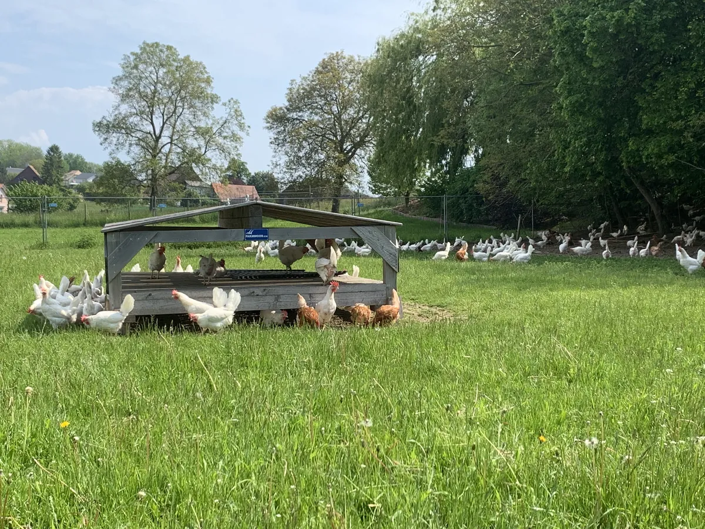
Des poules dehors, chaque jour
Trois hectares de parc rien que pour elles, avec des abris en plein pré. Les œufs sont frais, tous les jours.
Barbara et Gérard Wyss · Les Carrons 30
Tous les jours, des œufs frais plein air avec vue sur le lac. Et à côté, le sirop et les pâtes de Barbara, nos pommes de terre, du jus de pomme et du miel.
1474 Châbles · à 5 minutes d’Estavayer
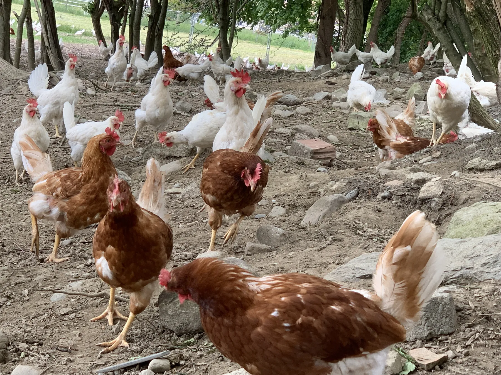
La ferme
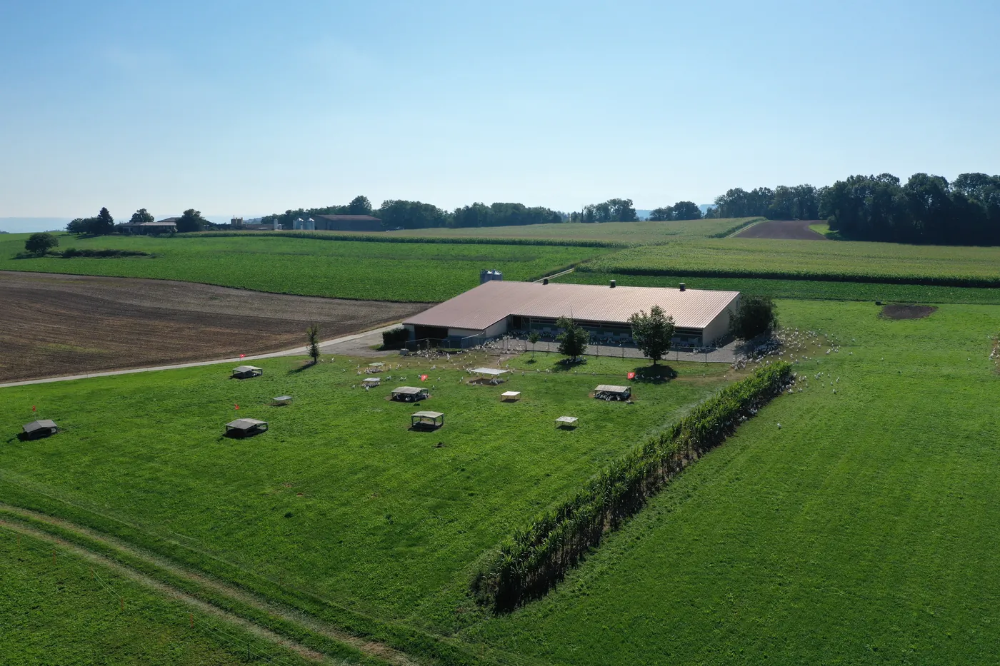
Une ferme de famille à Châbles, à 5 minutes d’Estavayer. Ce que vous achetez ici vient d’ici.

Trois hectares de parc rien que pour elles, avec des abris en plein pré. Les œufs sont frais, tous les jours.
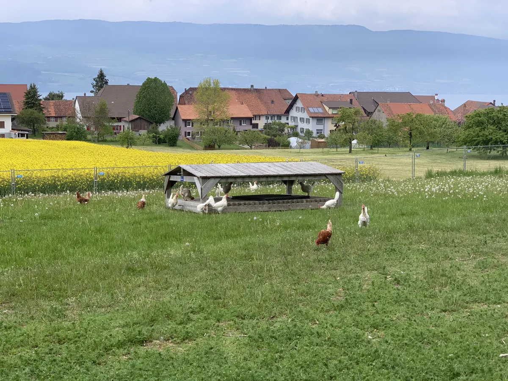
Le champ de colza, les toits du village et le lac au fond : c’est le décor du parc. D’où nos « œufs plein air avec vue sur le lac ».
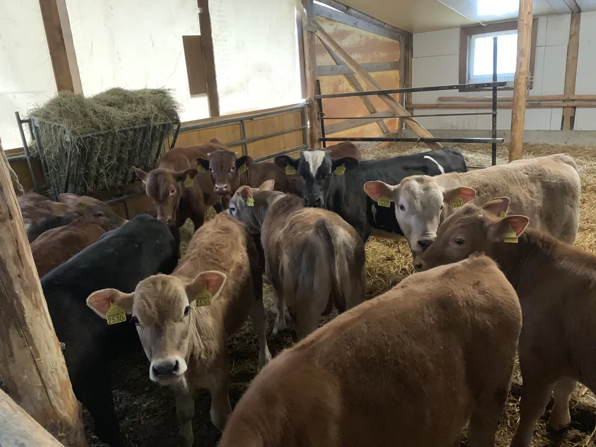
Cultures, œufs, taureaux et veaux : Gérard, maître-agriculteur depuis 1997, mène l’exploitation qu’il a reprise en 2004.
Produits de la ferme
Tous les jours, de nos 12 500 poules.
De différentes sortes.
Faits à la ferme par Barbara.
Composé sur demande : il suffit d’appeler Barbara.
Dans notre self, vous pouvez payer avec TWINT.
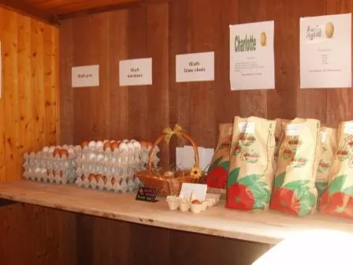
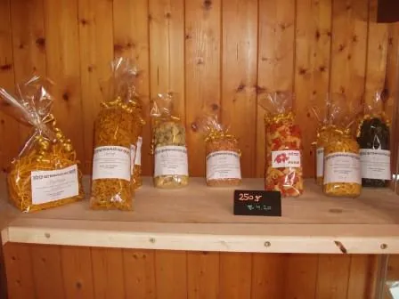
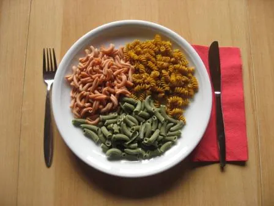
Nos œufs ailleurs
Notre principal acheteur d’œufs est Eico, qui les revend à Migros Fribourg/Neuchâtel. On les trouve aussi chez nos revendeurs de la région :
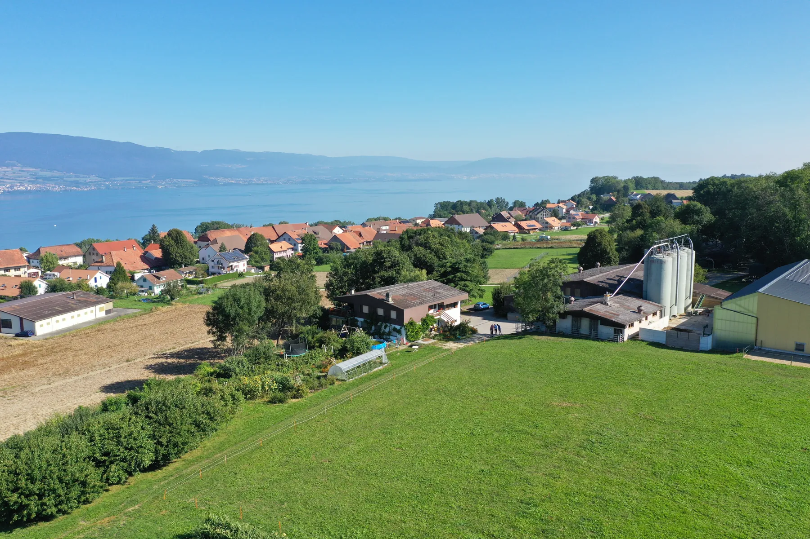
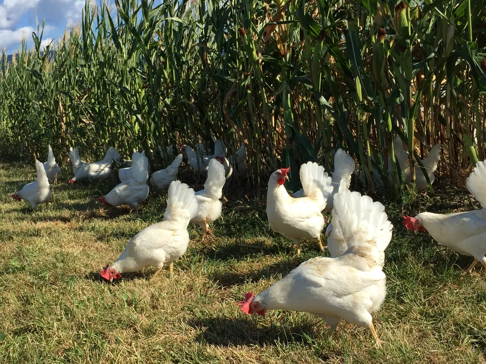
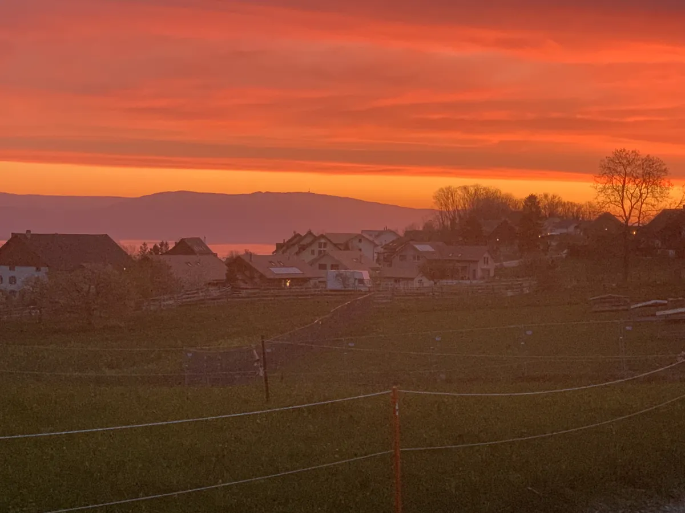
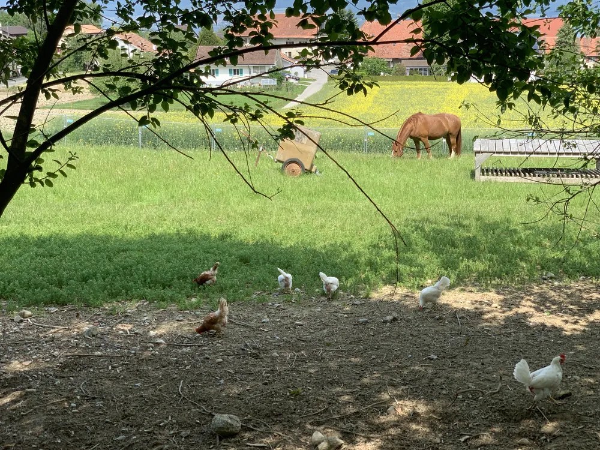
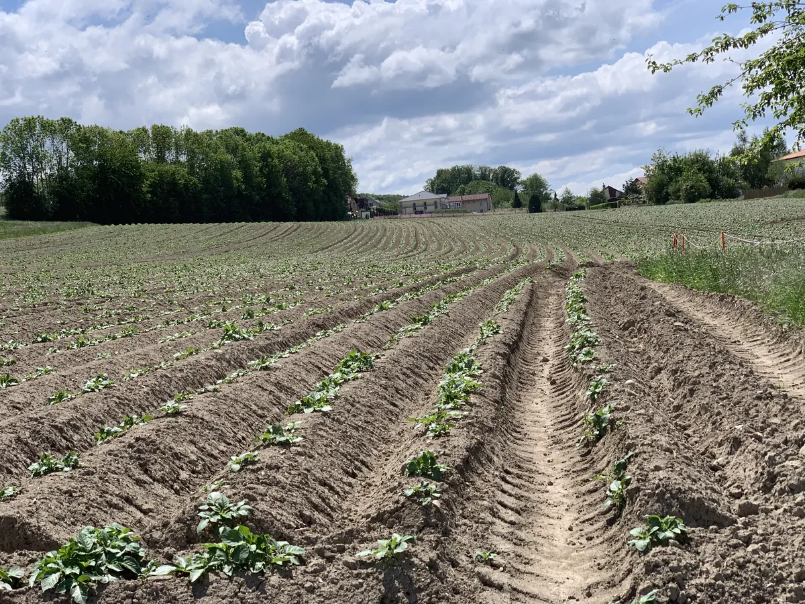
Nous
Situation
À 5 minutes d’Estavayer, à 15 minutes de Payerne et d’Yverdon.
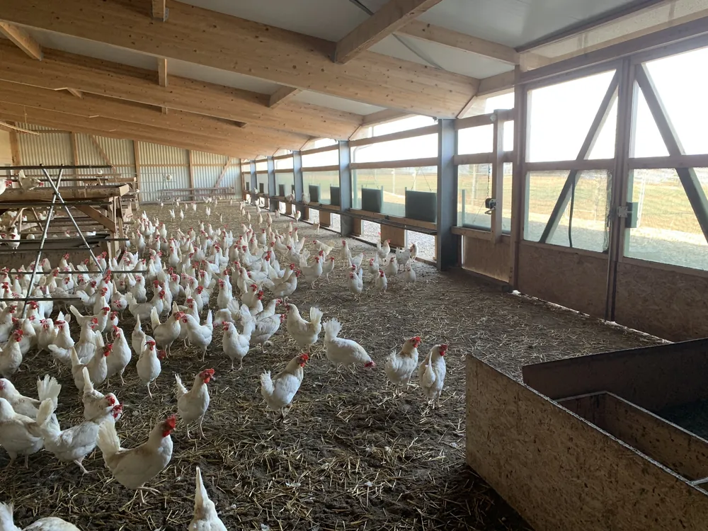